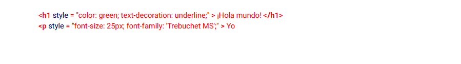

Sección 1.2: Estilos internos
CSS incluido en etiquetas de estilo dentro de un documento HTML funciona como una hoja de estilo
externo, excepto que reside en el documento HTML que diseñas en lugar de en un archivo separado, y por lo tanto
solo se puede aplicar al documento en el que vive. Tenga en cuenta que este elemento debe estar dentro
del elemento head para la validación HTML (aunque funcionará en todos los navegadores actuales si
colocado en el cuerpo).
Sección 1.4: Estilos en línea
Utilice estilos en línea para diseñar un elemento específico. Tenga en cuenta que esto no es óptimo. Lo sé
recomienda colocar reglas de estilo en una etiqueta de estilo o en un archivo CSS externo para mantener una
distinción entre contenido y presentación.
Los estilos en línea anulan cualquier CSS en una hoja de estilo externa o etiqueta de estilo. Mientras
Esto puede ser útil en algunas circunstancias, este hecho a menudo reduce la capacidad de
mantenimiento de un proyecto.
Los estilos del siguiente ejemplo se aplican directamente a los elementos a los que están asociados.
